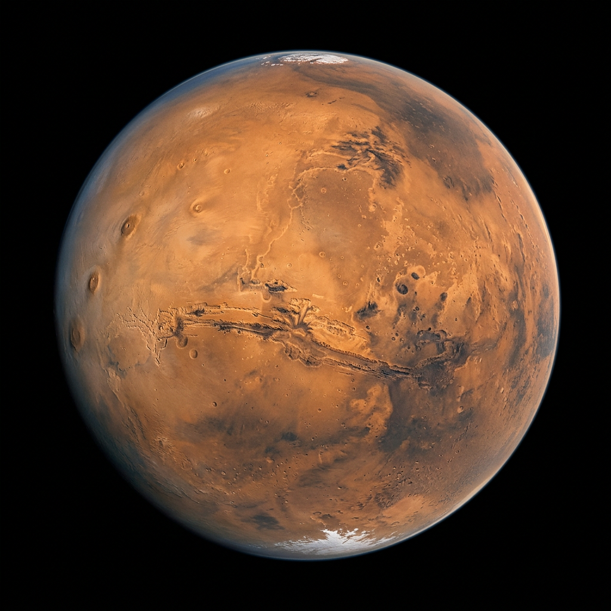

Planeta
Conoce más sobre este fascinante milagro que llamamos hogar, el Planeta Tierra. La inscripción al curso comienza hoy. Los boletos Early Bird duran solo una semana.
ComenzarEl Planeta Azul
La Tierra es un planeta rocoso y terrestre con una superficie activa de montañas, valles, cañones y vastos océanos. El agua cubre el 70% de su superficie.
Temperatura superficial
La atmósfera actúa como un escudo térmico que mantiene la temperatura estable y hace posible la vida tal como la conocemos.
Desde la órbita — luces de la ciudad
Las luces nocturnas de las ciudades son visibles desde el espacio. La humanidad ha transformado la superficie del planeta para siempre.
Planeta
El Planeta Rojo — el cuarto desde el Sol y hogar del volcán más alto del sistema solar. Marte ha capturado la imaginación humana por siglos y podría convertirse en nuestro segundo hogar.
Explorar
El Planeta Rojo
Marte rota sobre su eje cada 24 horas y 37 minutos — casi idéntico a la Tierra. Esta coincidencia facilitaría la adaptación humana en futuras colonias.
Olympus Mons
El volcán más alto del sistema solar. Triplica la altura del Everest y su base cubre un área similar a Francia.
Valles Marineris
Diez veces más largo que el Gran Cañón. Un sistema de cañones que recorre casi un cuarto de la circunferencia del planeta Marte.
Nuestro planeta es un esferoide oblato — ligeramente achatado en los polos y más ancho en el ecuador. La diferencia es de unos 21 km entre el radio polar y el ecuatorial.
Evidencias geológicas sugieren que Marte albergó océanos líquidos tan profundos como el Mediterráneo. El agua desapareció cuando el planeta perdió su campo magnético.
La magnetosfera terrestre deflecta miles de millones de partículas solares cada segundo. Sin ella, la radiación solar habría despojado la atmósfera hace miles de millones de años.
Con 21 km de altura, Olympus Mons en Marte triplica el Everest. Su base cubre un área similar a Francia. No ha entrado en erupción en los últimos 25 millones de años.
Curiosamente similar al día terrestre. Esta coincidencia facilitaría la adaptación humana en futuras colonias marcianas. La NASA diseña hábitats basados en este ciclo.
Hace 2,400 millones de años, las cianobacterias desencadenaron la Gran Oxidación. Transformaron una atmósfera de metano y CO₂ en el aire respirable que tenemos hoy.
Comienza tu viaje